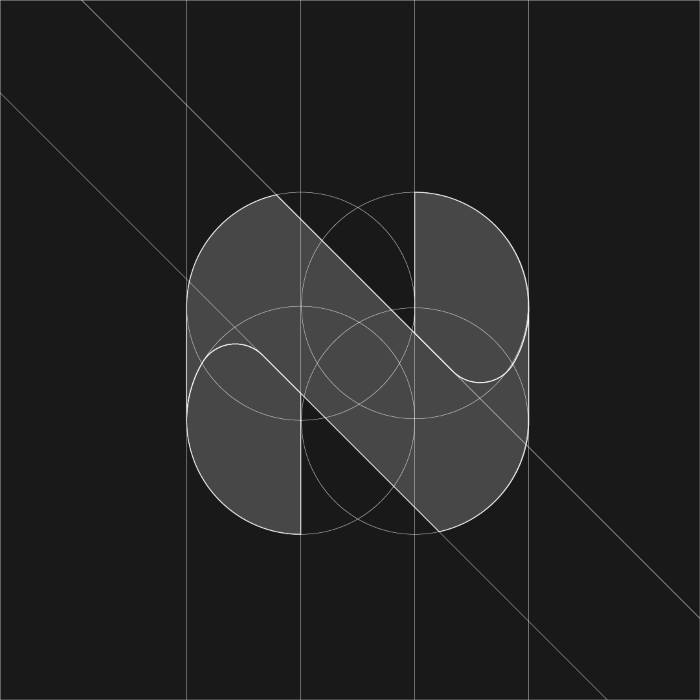
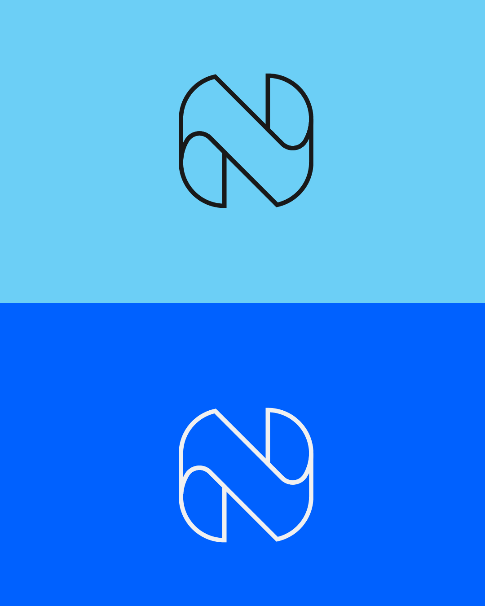
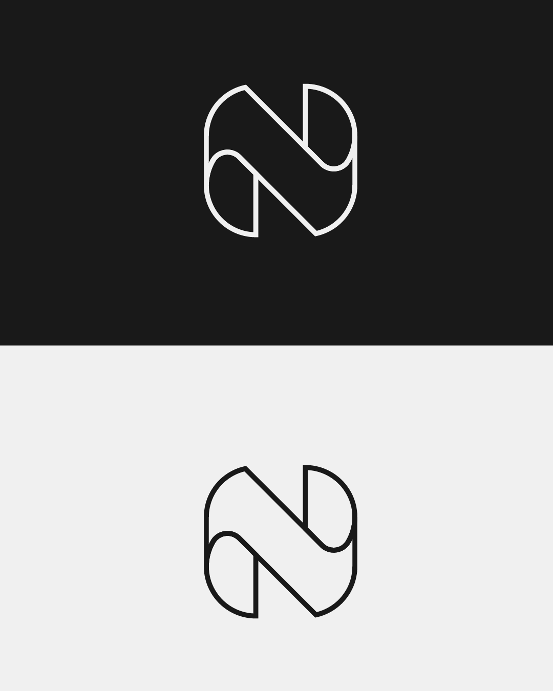
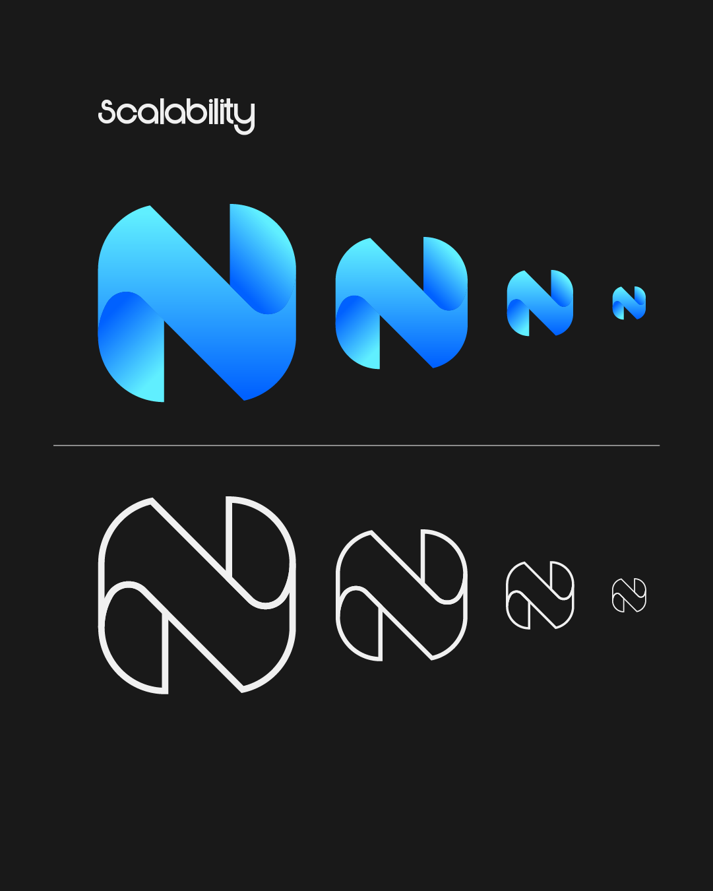
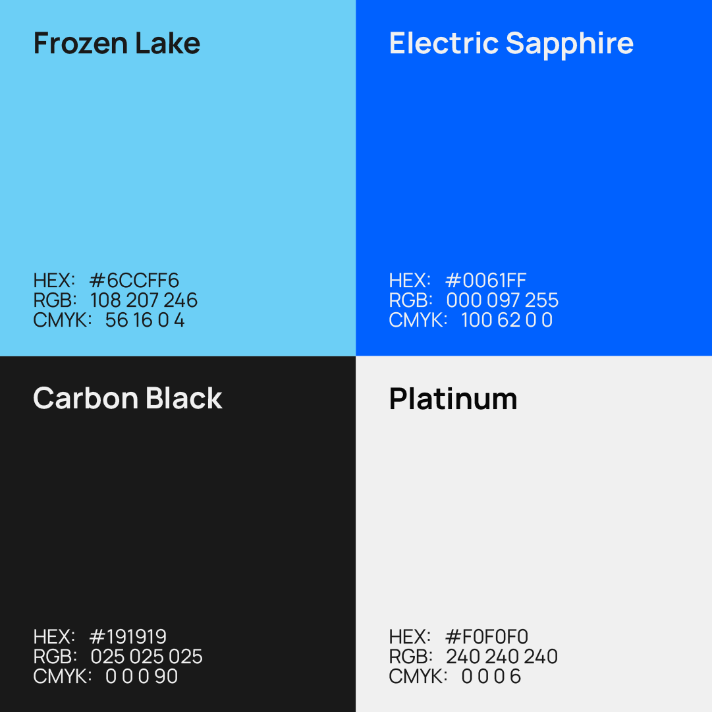
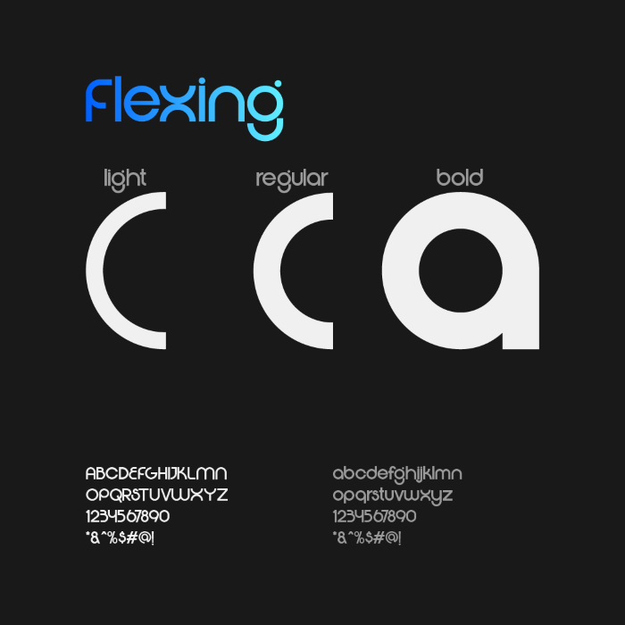
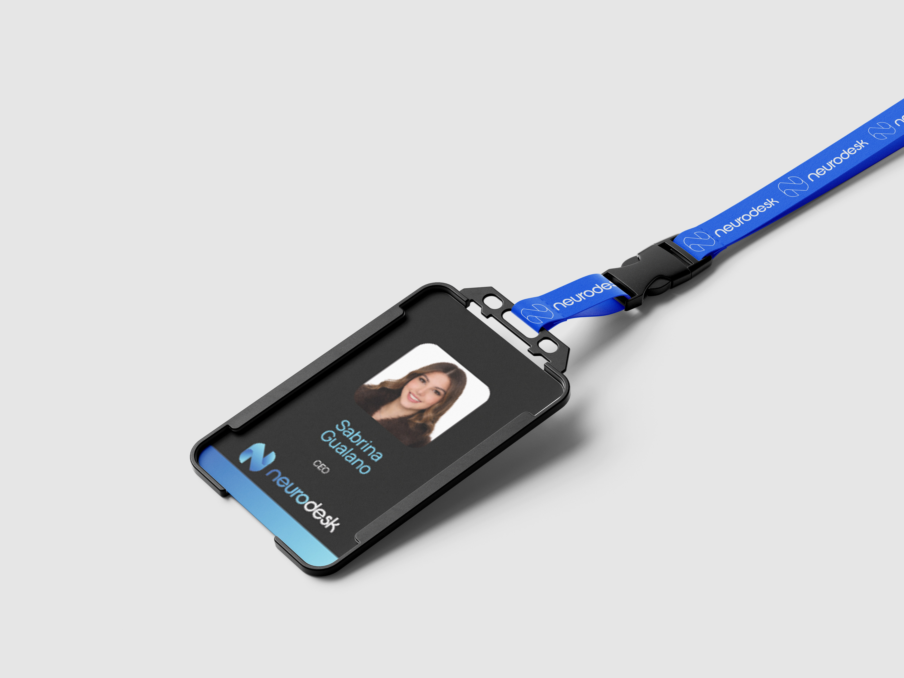

Neurodesk
Branding

Intro
Neurodesk è una startup che progetta scrivanie intelligenti basate su sistemi di AI. L'obiettivo è migliorare l'ergonomia e il benessere di chi lavora molte ore alla scrivania, attraverso superfici e componenti capaci di adattarsi automaticamente alla postura e alle abitudini dell'utente. Il brand unisce un'estetica semplice e moderna a un'idea chiara di innovazione concreta: la tecnologia che si prende cura delle persone ogni giorno.
Brief
Neurodesk nasce dall'esigenza di migliorare l'ergonomia per chi trascorre molte ore alla scrivania. Il brand doveva trasmettere innovazione, affidabilità e precisione, comunicando la promessa di un prodotto intelligente, funzionale e attento alle esigenze dell'utente. Il brief creativo richiedeva un logo che fosse minimal, moderno e facilmente riconoscibile, capace di adattarsi a diverse applicazioni digitali e fisiche, dalle interfacce ai materiali del prodotto stesso. L'obiettivo era costruire un'identità visiva coerente, che unisse tecnologia avanzata e cura del dettaglio, senza risultare fredda o distante.
Ricerca & Insight
Per definire un'identità forte e coerente per Neurodesk, il primo passo è stata un'analisi approfondita del contesto e dei competitor. Dal confronto con altre aziende di scrivanie intelligenti e soluzioni ergonomiche è emerso che molte comunicazioni erano tecniche ma fredde.
Ho quindi creato una moodboard e una palette colori di riferimento, cercando ispirazione nel mondo della tecnologia avanzata, del design minimalista e delle applicazioni di intelligenza artificiale. L'obiettivo era individuare un equilibrio tra innovazione, affidabilità e precisione nei dettagli, valori chiave del brand.
Dall'analisi sono emersi alcuni insight fondamentali:
- L'importanza di un design semplice e intuitivo, che comunichi chiaramente i benefici del prodotto.
- La necessità di trasmettere fiducia e sicurezza, elementi cruciali per un prodotto tecnologico.
- Il valore di un approccio umano e attento alle esigenze dell'utente, per differenziarsi in un mercato competitivo.
Sistema visivo
Logo
Il logo di Neurodesk nasce dalla lettera "N", reinterpretata in chiave geometrica. La costruzione è stata sviluppata su una griglia a tre colonne, utilizzando quattro cerchi con raggio pari alla larghezza di una colonna.
Questo sistema modulare permette di ottenere:
- proporzioni equilibrate
- curve coerenti tra loro
- un segno essenziale ma distintivo

Le intersezioni tra i cerchi generano un ritmo visivo che richiama l'idea di connessioni neurali e di flusso continuo tra utente e tecnologia. La precisione costruttiva del marchio comunica chiaramente i valori del brand: innovazione, affidabilità e cura del dettaglio.
Prove colore
Il logo è stato testato su tutti i fondali previsti dal sistema visivo, verificando leggibilità e resa cromatica in ogni contesto d'uso. Le prove colore garantiscono che il marchio mantenga forza e riconoscibilità sia su sfondi chiari che scuri, sia all'interno della palette brand che in ambienti neutri.


Scalabilità
Un logo professionale deve funzionare a qualsiasi dimensione, dal favicon di 16px alla segnaletica di grandi formati. Il marchio di Neurodesk è stato testato in scala decrescente, sia nella versione con gradiente che in quella outline, dimostrando che la struttura geometrica mantiene leggibilità e identità anche alle dimensioni più ridotte.

Palette colori
La palette di Neurodesk è stata progettata per comunicare tecnologia, innovazione e cura ingegneristica. Ogni colore ha una funzione precisa: alcuni costruiscono il carattere del brand, altri garantiscono leggibilità e struttura.

Frozen Lake:
Colore principale (parte iniziale del gradiente)
Nel graphic design comunica:
- freschezza e innovazione
- chiarezza mentale (ordine, concentrazione)
- comfort visivo
Usato nel gradiente del logo, rappresenta il lato più "umano" e leggero della tecnologia.
Electric Sapphire:
Colore principale (parte finale del gradiente)
Questo blu acceso introduce energia controllata.
Comunica:
- tecnologia avanzata
- precisione tecnica
- dinamismo e progresso
Nel logo, unito a Frozen Lake, crea una transizione che racconta il passaggio da "semplice superficie" a
scrivania intelligente.
Il gradiente non è solo estetico, ma simbolico: rappresenta l'evoluzione continua e l'adattabilità del prodotto.
Carbon Black:
Colore di struttura
Nel graphic design, il nero profondo ha una funzione precisa:
- aumenta il contrasto e la leggibilità
- comunica affidabilità e solidità
- rende il brand più elegante e professionale
È ideale per testi, elementi tecnici e interfacce, dove il contenuto deve risultare chiaro e stabile.
Platinum:
Colore di struttura
Platinum serve come base neutra:
- crea spazi puliti
- migliora la gerarchia visiva
- rafforza l'impressione di ordine, minimalismo e precisione
Nel graphic design, questo tipo di grigio chiaro è spesso associato a prodotti high-tech e industrial design, perché lascia emergere le forme e gli elementi funzionali.
Tipografia

Per Neurodesk è stato scelto Flexing, un carattere sans-serif dal taglio contemporaneo, pensato
per comunicare tecnologia e rigore senza perdere leggibilità.
Nel contesto del brand, Flexing svolge diverse funzioni:
-
Innovazione
Le forme geometriche e le curve pulite richiamano il mondo high-tech e dei dispositivi intelligenti. Trasmette l'idea di prodotto avanzato, progettato con criteri ingegneristici. -
Affidabilità
L'equilibrio tra spessori e proporzioni rende il testo stabile e ordinato. Questo aiuta a comunicare solidità e professionalità, elementi fondamentali per una startup che promette ergonomia e supporto nel lavoro quotidiano. -
Precisione nei dettagli
I terminali netti e la struttura modulare riflettono l'attenzione al design industriale. Ogni elemento appare controllato, misurato, essenziale.
Applicazioni di stampa
Il sistema visivo è stato declinato su materiali fisici per verificarne la coerenza e l'efficacia in contesti reali. Ogni applicazione rispetta la gerarchia visiva del brand e dimostra come l'identità di Neurodesk si adatti con naturalezza ai diversi formati della comunicazione aziendale.
Biglietti da visita
Il biglietto da visita adotta il Carbon Black come sfondo dominante, valorizzando il gradiente brand e il logotipo. Il lato retro integra un blocco cromatico in gradiente che richiama direttamente la palette principale, creando un oggetto riconoscibile e coerente con l'intera identità.

Badge aziendale
Il badge aziendale è stato progettato in due versioni: fronte con foto, nome e ruolo del dipendente; retro con contatti aziendali, ID e QR code. Il laccetto personalizzato con il logo ripetuto estende la brand identity anche agli accessori, garantendo coerenza visiva in ogni punto di contatto.
